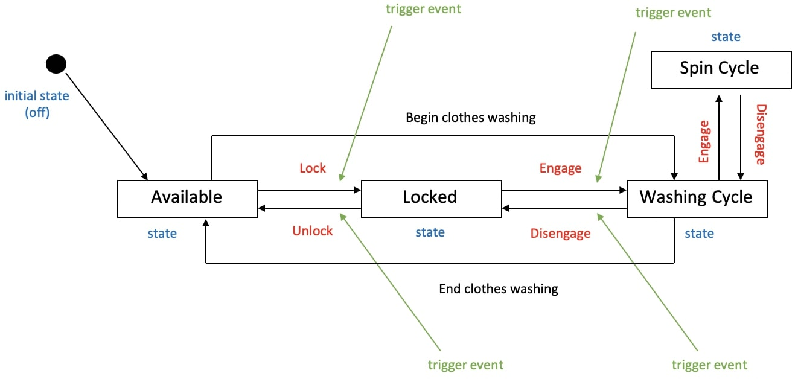
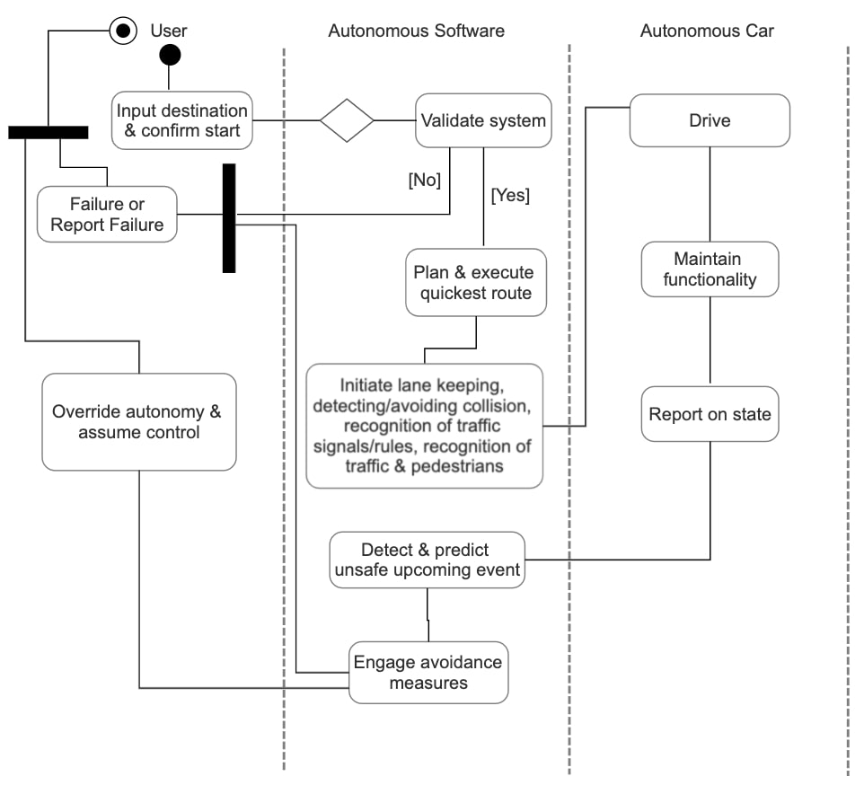
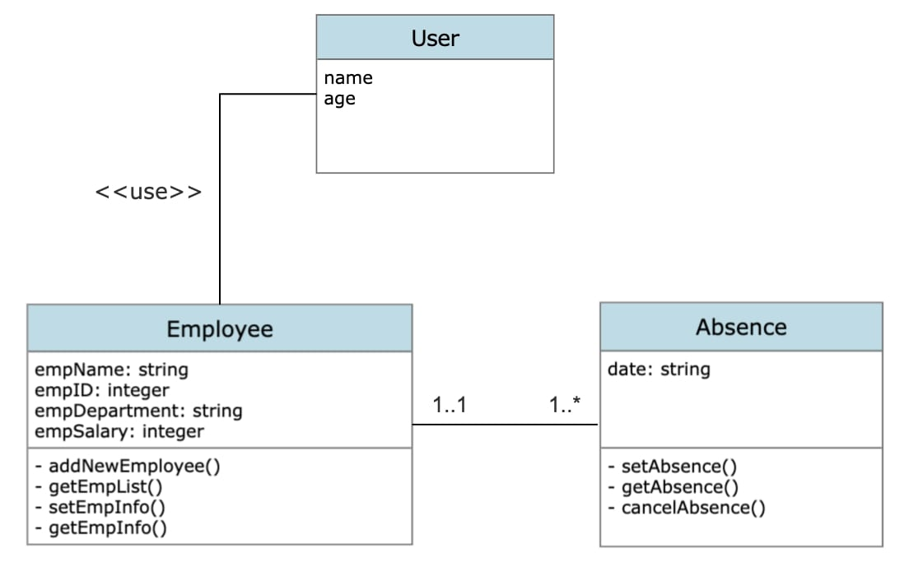
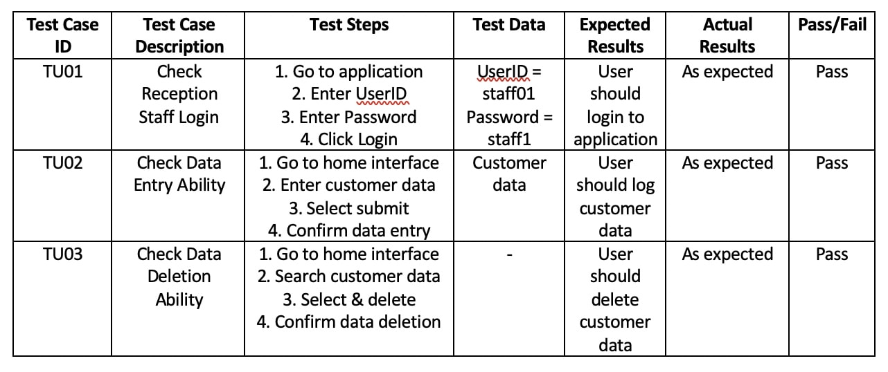

e-Portfolio Weekly Activities
Unit 1 Activities
Di Silvestro & Nadir (2021) Article ReviewIn the article by Di Silvestro & Nadir (2021), I identified one aspect that I unexpected. This aspect was the 3rd theme of the article; “Students found new personal strengths.”. This was unexpected because my understanding of why one should develop an e-portfolio, was skewed. Initially, my understanding of an e-portfolio was that it is simply an evidence of work completed whilst studying. Although, whilst this is the case, it should be understood that it is also a space in which the imperfections of one’s work and the learning process involved should also be documented. The primary purpose of developing an e-portfolio can therefore be redefined as a method to foster reflective and deeper learning.
Classes & Objects: Codio Lab
class Person:
def __init__(self,first,last,weight,height):
self.first_name = first
self.last_name = last
self.weight_in_kg = weight
self.height_in_cm = height
p1 = Person('Liam','Willson',80,90)
p2 = Person('Narelle','Willson',50,60)
p3 = Person('Jemma','Willson',50,65)
p4 = Person('Chanel','Willson',60,75)
p5 = Person('Gail','Shorthouse',50,60)
people = [p1,p2,p3,p4,p5]
for i in people:
print(i.first_name)
Unit 2 Activities
Autonomous Car User Pen PortraitMost likely has passed driving exam. Has driver license. Above the age of 16 at least. Likely legal age in country where driving. Either male or female. Can speak any language. Able bodied or non-able bodied. Of any possible height. Of varying education levels. Of varying levels of life experience. Of varying levels of tech experience/familiarity. Likely of stable mental health. Dislikes or likes the driving experience. Of differing attitude each day. Socioeconomically able to afford a car (&/or autonomous car). Likely supportive of or indifferent to new technologies. Seeking the ideal driving experience.
Use Case Model: User Interaction With Autonomous Car Software

Protected & Unprotected Variables Program
class Student:
_schoolname = 'ABC School'
__jurisdiction = 'Queensland'
def __init__(self,name):
self.name = name
def printName(self):
print(self.name)
std = Student('Liam')
print(std.name)
std.name = 'Dua'
print(std.name)
print(Student._schoolname)
print(Student.__jurisdiction)
Unit 1-3 Collaborative Discussion
Unit 1 Initial Post
Padhy et al. (2018) prioritise 11 identified reusable assets associated with software development.
These reusable assets have been identified from analysis of relevant and appropriate articles.
Although, the ranking of these reusable assets is seemingly subjective.
The following describes how I would reorder their ranking. I believe this ranking values logical
progression as it relates to software development. Hence, more value is unintentionally given
to reusable assets related to software planning and design. This is meaningful. Potentially,
a more objective approach.
- Requirement analysis (RA): Fundamental in any software project, is the system to be utilised capable and appropriate for this development. Does technology allow this development?
- Knowledge requirement (KR): Also fundamental, is the required development capability present. Experience allows progression.
- Models in the project (MP): Planning the objective and purpose of software is essential and perhaps the product of previous developments.
- Design patterns (DP): Does the design of the project allow foresight and efficient development?
- Test cases/test design (TCTD): If testing of the software will be ambiguous, then quality software cannot be the result.
- Architecture driven approach (ADP): If overall structure of this project is the product of previous development, does this provide foresight to predict future likely issues.
- Modules in the program (MIP): Now, the fundamentals of any in-development or built project: the components of it. Discussion continued below.
Reference:
Padhy, N., Satapathy, S., & Singh, R.P. (2018) 'State-of-the-Art Object-Oriented Metrics and Its Reusability: A Decade Review', in: Satapathy S., Bhateja V., Das S. (eds) Smart Computing and Informatics. Smart Innovation, Systems and Technologies. 77. Springer.
Unit 2 Peer Responses
Reply 1
Thanks for the post.
I think your approach has prioritised what is most fundamental within any software project and
I appreciate this. By ranking the requirement analysis (RA) and knowledge requirement (KA) as
1 and 2 respectively, I think this allows a very conservative and thought out approach to any
software project and it’s use of reusable assets. These are fundamental to beginning of any
project.
Furthermore, I think this approach is continued for rankings 3 and 4, although I would argue
that perhaps the ranking of 3 and 4 could be switched. The architecture driven approach (ADA)
is seemingly broader and generally more fundamental than algorithms used in the program (AP).
Additionally, perhaps either test cases (TCTD) or modules in the program (MIP) are fundamental
at a lower level than documentation in the project (DIP).
Finally, allocation of design patterns (DP) as worthy of ranking and the remaining reusable
assets as not is a focussed approach and I appreciate this. It allows an efficient summary of the
content of Padhy et al.’s (2018) article. Although, I would argue that the remaining reusable
assets not ranked do provide value to software development, it’s just simply not very meaningful
to provide them a rank.
Reference:
Padhy, N., Satapathy, S., & Singh, R.P. (2018) 'State-of-the-Art Object-Oriented Metrics and Its
Reusability: A Decade Review', in: Satapathy S., Bhateja V., Das S. (eds) Smart Computing and
Informatics. Smart Innovation, Systems and Technologies. 77. Springer.
Reply 2
Thanks for the post.
I think it’s important that fundamentally the Requirement analysis (RA) and Knowledge requirement
(KR) reusability assets are prioritised when ranking the reusability assets outlined in Padhy et
al. (2018). This is because they are so obviously fundamental to the beginning of any project or
if a project can begin at all. I appreciate that your ranking of the reusability assets reflects
this. I also agree that the Architecture driven approach (ADA) has assumed the position you have
given it.
Furthermore, upon reading your submission I have become more aware of the importance of Service
contracts (SC). Your explanation of this reusable asset highlights its importance and the relationship
it has with being cost efficient and ensuring that the development of the project continues with
a focussed outcome and assurance that the end product will be a satisfactory product.
Finally, however, I believe the Test case/Test design (TCTD) reusability asset deserves more
value. Ultimately, the testing process and meaningfulness of test results is significantly important.
This informs the end product and the value that this product will provide because assurance is provided
that the end product will be complete at least and more importantly achieve its objective.
Reference:
Padhy, N., Satapathy, S., & Singh, R.P. (2018) 'State-of-the-Art Object-Oriented Metrics and Its
Reusability: A Decade Review', in: Satapathy S., Bhateja V., Das S. (eds) Smart Computing and Informatics.
Smart Innovation, Systems and Technologies. 77. Springer.
Unit 3 Summary
Upon now having experienced the learning content of the first 3 units of ‘Object Oriented Programming’
and receiving feedback from my peers regarding my initial post, a discussion about Padhy et al.’s (2018)
article analysing and ranking the reusable assets relating to software development, this is my summary
review.
The feedback provided to me primarily highlighted that my aim to more objectively rank the reusable
assets was ideal and that my attempt to do so by considering which assets are more low-level or fundamental
to the software development process is well thought out and a good approach. The feedback also generally
overall agreed with the ranking I provided, although some of the feedback highlighted that the assets I
didn’t rank potentially deserved more value. I agree with this conclusion and would revise my initial
submission accordingly. Although, from the content I have been exposed to in the first 3 units, I believe
my initial ranking, especially the first few rankings (e.g. the ranking of the Requirement analysis (RA)
and Knowledge requirement (KR) assets) are correct objectively. Beyond this, it becomes very difficult to
continue the ranking of the remaining assets because many arguably have similar value as it relates to
software.
Furthermore, my initial submission did not consider aspects including time, effort, cost and efficiency
of software development as it relates to each individual reusable asset. By doing this I could’ve potentially
provided a tangible method with which each reusable asset could have been objectively valued, compared and
contrasted. Then, the supposed subjectivity I viewed to be present when ranking these assets would be less
subjective, more objective and therefore, more meaningful.
Finally, by reviewing Padhy et al.’s (2018) article and accompanying a submission through the feedback
and review process, I have come to learn a lot about software development in general and more specifically
the aspects of software development in general and those that are reusable.
Reference:
Padhy, N., Satapathy, S., & Singh, R.P. (2018) 'State-of-the-Art Object-Oriented Metrics and Its Reusability:
A Decade Review', in: Satapathy S., Bhateja V., Das S. (eds) Smart Computing and Informatics. Smart Innovation,
Systems and Technologies. 77. Springer.
Unit 3 Activities
Software Development Life Cycle (SDLC) & UML ModelsThe Software Development Life Cycle (SDLC) involves 6 stages. They are,
- Planning
- Defining
- Designing
- Building
- Testing
- Deployment
- Behavioural = Capture the interactions between system components over time
- Structural = Represent components of a system and relationships between them
- Architectural = Capture high-level perspective of system
Use Case Diagrams – Define system functional requirements. Therefore, most ideal in the planning, defining and designing stages of the SDLC. This is because by being able to visualise the functional requirements of a system before it’s built allows developers to visualise a complete broad overview of the system and its interactions.
Component diagrams – Shows the system components. Similar reasoning as above.
Object diagrams – Represents instances of system classes. Therefore, because this type of diagram analyses specific points in time, it is most ideal to use deep in the planning and building stages of the SDLC.
Timing diagrams – Show change of state or value of elements over time. Therefore, most ideal to use during the testing stage of the SDLC to identify the ‘flow’ of various values and elements within a program.
State Machine diagrams – Capture transitions of a system between activities and states executed. Thus, ideal to utilise in the designing stage primarily because this diagram involves defining actions that determine the state/activity of the following component in the diagram.
Architectural diagrams (generally) – Provide overall framework capture and therefore, ideally best use is throughout the initial stages.
Reference:
Rumbaugh, J, Jacobson, I & Booch, G 1999, The Unified Modeling Language Reference Manual, Addison Wesley Longman, Inc.
State Machine Diagram: Washing Machine

Class Functions & Class Methods: Codio Lab
class Person:
def __init__(self, first, last, weight, height):
self.first = first
self.last = last
self.weight = weight
self.height = height
def printSelf(self):
return ("%s %s %d %d" % (self.first, self.last, self.weight, self.height))
class BMI(Person):
def calcBMI(self):
global bmi
bmi = (self.weight) / (self.height ** 2)
return bmi
def checkHealth(self):
if bmi < 18.5:
return "Your BMI is underweight"
elif 18.5 < bmi < 24.9:
return "Your BMI is healthy"
elif 25 < bmi < 29.9:
return "Your BMI is overweight"
elif 30 < bmi:
return "Your BMI is obese"
else:
return "Something is wrong"
p1 = Person('Tom', 'Thumb', 90, 1.8)
p2 = Person('Fred', 'Flint', 80, 1.6)
print(p1.printSelf())
print("BMI is: ", BMI.calcBMI(p1))
print(BMI.checkHealth(p1))
print("\n")
print(p2.printSelf())
print("BMI is: ", BMI.calcBMI(p2))
print(BMI.checkHealth(p2))
Unit 4 Activities
Activity Diagram: Autonomous Car

Class Diagram: Employee Functionality Program

Employee Functionality Program: Classes & Objects
class Employee:
employeeList = list()
def __init__(self, empName, empID, empDepartment, empSalary):
self.empName = empName
self.empID = empID
self.empDepartment = empDepartment
self.empSalary = empSalary
def addNewEmployee(self):
Employee.employeeList.append(self)
def getEmpList(self):
return Employee.employeeList
def setEmpInfo(self, empName, empID, empDepartment, empSalary):
self.empName = empName
self.empID = empID
self.empDepartment = empDepartment
self.empSalary = empSalary
def getEmpInfo(self):
return self.empName, self.empID, self.empDepartment, self.empSalary
def __str__(self):
return "%s %d %s %d" % (self.empName, self.empID, self.empDepartment, self.empSalary)
class Absence():
def setAbsence():
global date
date = input("Enter the date of your annual leave day: ")
def getAbsence():
print(date)
def cancelAbsence():
global date
date = "No annual leave day booked"
print(date)
choice = 1
employee = Employee(0, "", "", 0.0)
while choice >= 1 and choice <= 5:
print("\n\n1. Input your info\n2. See your info\n3. Book an annual leave day\n4. Review your annual leave day\n5. Delete your annual leave day")
choice = int(input("Enter your choice: "))
if choice == 1:
empName = input("Enter your name: ")
empID = int(input("Enter your ID: "))
empDepartment = input("Enter your department: ")
empSalary = int(input("Enter your salary: "))
emp = Employee(empName, empID, empDepartment, empSalary)
emp.addNewEmployee()
elif choice == 2:
print("\n")
for emp in employee.getEmpList():
print(emp)
elif choice == 3:
print("\n")
Absence.setAbsence()
elif choice == 4:
print("\n")
Absence.getAbsence()
elif choice == 5:
print("\n")
Absence.cancelAbsence()
Unit 5 Activities
Inheritance: Codio Lab
class Person:
count = 0
"""Represents a generic Person."""
def __init__(self, first, last, weight, height, age = 0, gender = ''):
self.first = first
self.last = last
self.weight = weight
self.height = height
self.age = age
self.gender = gender
self.bmi = ''
Person.count = Person.count + 1
@classmethod
def print_count(cls,):
return cls.count
class Adult(Person):
def calc_bmi(self):
bmi_tmp = (self.weight) / self.height ** 2
print('BMI number is: ' + str(bmi_tmp))
if bmi_tmp < 18:
self.bmi = 'Underweight'
elif bmi_tmp > 18 and bmi_tmp < 25:
self.bmi = 'Normal'
elif bmi_tmp > 25 and bmi_tmp < 30:
self.bmi = 'Overweight'
elif bmi_tmp > 30:
self.bmi = 'Obese'
return self.bmi
class Child(Person):
def get_male_bmi(self, age, bmi_temp):
bmi_class = ''
if self.age > 2 and self.age < 9:
if bmi_temp < 14:
bmi_class = 'Underweight'
elif bmi_temp > 14 and bmi_temp < 17:
bmi_class = 'Normal'
elif bmi_temp > 17 and bmi_temp < 20:
bmi_class = 'Overwight'
else:
bmi_class = 'Obese'
elif self.age > 9 and self.age < 16:
if bmi_temp < 17:
bmi_class = 'Underweight'
elif bmi_temp > 17 and bmi_temp < 23:
bmi_class = 'Normal'
elif bmi_temp > 23 and bmi_temp < 25:
bmi_class = 'Overwight'
else:
bmi_class = 'Obese'
elif self.age >= 16:
if bmi_temp < 19:
bmi_class = 'Underweight'
elif bmi_temp > 19 and bmi_temp < 23:
bmi_class = 'Normal'
elif bmi_temp > 23 and bmi_temp < 25:
bmi_class = 'Overwight'
else:
bmi_class = 'Obese'
return bmi_class
def get_female_bmi(age, bmi_temp):
return 'Not implemented'
def calc_bmi(self):
bmi_tmp = (self.weight) / self.height ** 2
if self.gender == 'M':
self.bmi = self.get_male_bmi(self.age, bmi_tmp)
elif self.this_gender == 'F':
self.bmi = self.get_female_bmi(self.age, bmi_tmp)
return self.bmi
class Teacher(Adult):
def __init__(self, first, last, weight, height, teaching_level, age = 0, gender = ''):
Adult.__init__(self, first, last, weight, height)
self.bmiRisk = teaching_level
def get_bmiRisk(self):
return self.bmiRisk
a1 = Adult('Tom', 'Thumb', 90, 1.86, 30, 'M')
c1 = Child('Mark', 'Smith', 50, 1.6, 15, 'M')
t1 = Teacher('Liam', 'Willson', 70, 2.0, 1, 22, 'M')
print(a1.first)
print(a1.calc_bmi())
print(c1.first)
print(c1.calc_bmi())
print(t1.first)
print(t1.calc_bmi())
print(t1.bmiRisk)
Polymorphism: e-Portfolio Activity
class ObstacleSensor:
def __init__(self, warning = None):
self.warning = warning
def alarm(self):
print("\n*beep*")
print(f"Vehicle detection of obstacle. Slowing. Warning: {self.warning}")
override = input("Enter '1' to override warning: ")
if override == '1':
print('''**Warning, override. You have control of DRIVE.**
Engage autonomous drive when safe to do so.''')
else:
pass
class PositionalSensor:
def __init__(self, warning = None):
self.warning = warning
def alarm(self):
print("\n*beep*")
print(f"Vehicle cannot detect lane markings. Slowing. Warning: {self.warning}")
override = input("Enter '1' to confirm override: ")
if override == '1':
print('''**Warning, override. You have control of DIRECTION.**
Engage autonomous drive when safe to do so.''')
else:
pass
obstacle_sensor = ObstacleSensor('DANGER')
positional_sensor = PositionalSensor('DANGER')
for sensor in (obstacle_sensor, positional_sensor):
sensor.alarm()
Unit 6 Activities
The Metrics Used To Assess The Features Of An Object Oriented Program
Object Oriented Program (OOP) metrics are used to determine the success or failure of a program,
provide general evaluation and are a method used to quantify the improvements in software needed.
Simply described, OOP metrics are used to characterise software engineering products, processes
and people. Specifically, these metrics are software/program (i) efficiency, (ii) complexity,
(iii) understandability, (iv) reusability, (v) testability/maintainability. These metrics
are self-explainable in terms of their importance as they relate to the quality of a
program/software.
These metrics are affected by the techniques used when coding programs/software. An example is
inheritance. Inheritance helps us to introduce reusability, efficiency and to control complexity
of a program. Furthermore, encapsulation enhances software quality by ensuring safety via information
hiding. Objects have public interfaces to allow communication with them and understandability.
However, that same object can hold private information and methods that can be changed without
global affect.
Reference:
Parthasarathy, S & Anbazhagan, N 2006, ‘Analyzing the software quality metrics for object oriented
technology’, Information Technology, vol. 5, 1053-1057
Knox et al. (2018) Article Review
- Component based modelling (also known as Integrated Environmental Models or IEMs) is a form of model integration in which processes within an integrated model are represented by pluggable model components.
- Implementation of component based modelling depends on the how much the model itself must be modified in order to allow integration and on the value of its inclusion.
- In the context of the paper by Knox et al. (2018), Pynsim (otherwise known as the Python Network Simulation Framework) is an open-source library for building simulation models of networked systems.
- Pynsim uses an object oriented approach which allows it to produce general and modular definitions of networks, their properties and simulation behaviour. Therefore, it achieves its goal because it can be applied to many areas of network modelling and allows multiple behaviour-defining codes to be integrated into a single simulation.
Knox, S, Meier, P, Yoon, J & Harou, J 2018, ‘A python framework for multi-agent simulation of networked resource systems’, Environmental Modelling & Software, vol. 103, 16-28
Encapsulation: Codio Lab
class Person():
def __init__(self, name, age, occupation):
self._name = name
self._age = age
self._occupation = occupation
def get_name(self):
return self._name
def set_name(self, new_name):
self._name = new_name
def get_age(self):
return self._age
def set_age(self, new_age):
self._age = new_age
def get_occupation(self):
return self._occupation
def set_occupation(self, new_occupation):
self._occupation = new_occupation
my_person = Person("Citra Curie", 16, "student")
print(my_person.get_name())
print(my_person.get_age())
my_person.set_age(18)
print(my_person.get_age())
print(my_person.get_occupation())
my_person.set_occupation("plumber")
print(my_person.get_occupation())
Banking Program: 3 Abstract Methods & 1 Subclass
from abc import ABC, abstractmethod
class Bank(ABC):
@abstractmethod
def info(self):
pass
@abstractmethod
def interest_rate(self):
pass
@abstractmethod
def borrowed(self):
pass
class Account(Bank):
def info(self):
print("Welcome to the bank.")
def interest_rate(self):
print("Today the interest rate is 2%")
def borrowed(self):
print("You have no outstanding loans")
def initialise(self):
selection = input("Enter 1 to deposit or 2 to withdraw: ")
if selection == str(1):
print("You deposited money... Exiting...")
else:
print("You have withdrawn money... Exiting...")
a1 = Account()
a1.info()
a1.interest_rate()
a1.borrowed()
a1.initialise()
Unit 7 Activities
Data Structures & How They Support Object-Oriented Programming
Data structures organise data. Inherently, organisation of data supports efficiency and capability of
object-oriented programs in relation to how they can then access this data and with what ease and clarity.
This makes sense because objects themselves are a type of data structure and thus, compatible with use
of other data structures. Different data structures are more suitable for different applications and
therefore, the most appropriate one must be utilised to maximise program efficiency. Resultant is the most
ideally defined relationship between multiple pieces of data and therefore, objects in object-oriented programs.
3 types of data structures are, dictionaries, lists and tuples.
Dictionaries (also referred to as a map, hash map, lookup table or associative array) are a data structure
type that allow a random number of objects to be stored, with a unique dictionary key allowing identification
of each. Lists are ordered collections of items and referred to via indexing. Finally, tuples are immutable
and the data in one tuple is related to and of relevance to data in other tuples.
Benefits that data structuring provides to object-oriented programs are, faster detection of anomalies,
improved data quality and availability of data, greater transparency within data teams, better regulatory
compliance and faster data analysing.
Reference:
Downey A (2012) Think Python, O’Reilly Media, California.
Nested Dictionary Program
class Car:
def __init__(self):
pass
def car_data(self):
data = {
"car1" : {
"brand" : "Volvo",
"model" : "V40",
"year" : 2009
},
"car2" : {
"brand" : "BMW",
"model" : "3 Series",
"year" : 2011
},
"car3" : {
"brand" : "Audi",
"model" : "A6",
"year" : 2013
}
}
return data
a1 = Car()
print(a1.car_data().items())
print("")
print(a1.car_data().keys())
print("")
print(a1.car_data().values())
Kampffmeyer & Zschaler (2007) Article: Program
class DesignPattern:
def __init__(self):
self.data = {
"Creational Design Pattern" : ["creations", "create", "objects", "making", "building", "installing"],
"Structural Design Pattern" : ["structures", "relationships", "designs", "organization", "system"],
"Behavioral Design Pattern" : ["behaviors", "communications", "functions", "operations", "actions", "reactions", "responses"]
}
def search(self):
search = input("Enter a keyword to search an appropriate design pattern: ")
search = search.lower()
for key in self.data:
for values in self.data[key]:
if search in values:
return f"You should use a {key}"
a1 = DesignPattern()
print(a1.search())
Unit 8-10 Collaborative Discussion
Unit 8 Initial Post
The Internet of Things (IoT) describes real world objects that participate in the internet and therefore,
must be globally networked, discovered and exploited. Smart Objects (SOs) which are physical objects that
are actual implementations of IoT, are strengthened by improvements in processing, communication, sensing
and actuation functionality. To fully exploit an SO’s potential, Fortino et al. (2015) suggest modelling of
the system’s properties must occur at different levels of abstraction. They attempt utilising metamodels.
Different versions of metamodeling map SO basic features and high-level interactions.
Of course, metamodeling has strengths and weaknesses and these directly relate to the successful implementation
of improved SO functionality. These will be discussed. Primarily, the strength of a metamodel lies in its
reduction of the computational burden associated with computationally demanding analyses of simulation models.
Thus, they are comparatively quick to develop, simple to derive, extremely flexible and more cost efficient.
Furthermore, they are well suited to deterministic applications such as SOs. And finally, are useful in ‘linearizing’
otherwise highly complex conceptualisations.
Weaknesses of metamodeling as they relate to SOs must be considered. Firstly, depending on the complexity of
the SO conceptualisation or application, ‘linearization’ can be difficult to extract; specialist expertise
may be required depending. Furthermore, the adequacy of the model is determined solely by individual conclusions.
And finally, at this time there exists little suitable software for expediting and making efficient the modelling
process.
Reference:
Fortino, G, Guerrieri, A & Savaglio C 2015, ‘Towards a development methodology for smart object-oriented IoT systems:
A metamodel approach’, IEEE International Conference on Systems, Man and Cybernetics (SMC), University of Calabria,
October 2015.
Unit 8 Activities
Exception Handling Program
import math
x = int(input("Please enter a positive number: "))
try:
print(f"Square Root of {x} is {math.sqrt(x)}")
except ValueError as ve:
print(f"Error: You entered {x}, which is not a positive number.")
try:
numerator = 10
denominator = 0
result = numerator/denominator
print(result)
except(ZeroDivisionError):
print("Error: Denominator cannot be 0")
try:
print("Hello" + 1 + "World!")
except(TypeError):
print("Error: Those types are unalike")
try:
print(thing)
except:
print("Error: Variable is not defined")
Recursion: Codio Lab
def recursive_power(base, exp):
if exp == 0:
return 1
else:
return base * recursive_power(base, exp - 1)
print(recursive_power(5,3))
print(recursive_power(4,5))
Polymorphism: Codio Lab
class Chef:
def __init__(self, name, cuisine, stars):
self.name = name
self.cuisine = cuisine
self.michelin_stars = stars
def __gt__(self, other_chef):
return self.michelin_stars > other_chef.michelin_stars
def compare(self, other_chef):
if self > other_chef:
return f'{self.name} has more Michelin stars than {other_chef.name}'
else:
return f'{other_chef.name} has more Michelin stars than {self.name}'
marco = Chef('Marco Pierre White', 'French, British', 3)
rene = Chef('Rene Redzepi', 'Nordic', 2)
print(marco.compare(rene))
print(rene.compare(marco))
Set Operation Descriptions
The ‘union’ set operation returns a set that contains all items from the original set, and all
items from the specified set/s. Application of this operation type in a program for an autonomous
car could include, when there is a need to collate all data retrieved by the system and then perform
analysis on this data.
The ‘intersection’ returns a set that contains the similarity between two or more sets. Application of
this operation type in a program for an autonomous car could include, when there is a need to isolate
data and exclude non-relevant data in whatever functionality might need to be executed.
The ‘difference’ returns a set that contains the difference between two sets. Application of this operation
type in a program for an autonomous car could include, when an identifier as it relates to the system and
when the data point was collected in relation to corresponding data points needs to be determined. This
could be to determine some conclusion about perhaps the surrounding environment of the autonomous car.
The ‘symmetric difference’ returns a set that contains all items from both sets, but not the items that are
present in both sets. Application of this operation type in a program for an autonomous car could include,
when there is a need to identify a repeated data entry by the system and therefore, perhaps as it relates
to an error.
Linear Search Program
#Search function with parameter list name and the value to be searched
def search(List, n):
for i in range(len(List)):
if List[i] == n:
return True
return False
#A list which contains both string and numbers.
List = [1, 2, "Hello", 4, "World", 6]
#Code
n = "World"
if search(List, n):
print("Found")
else:
print("Not Found")
Unit 9 Activities
Cyclomatic Complexity & Object Oriented Programming
Cyclomatic complexity is very relevant to object oriented systems and code because it aims to
quantitatively measure the complexity and therefore, quality of code. It encourages succinct
and concisely built systems that are as efficient as possible. Supposedly, ‘size’ of code is
proportional to effort and complexity of code. A greater number lines of code is associated with
a greater productivity requirement, decreased quality and higher development cost.
It is advantageous to analyse cyclomatic complexity because it can guide the testing process, it’s
easy to apply, it’s used to measure minimum effort. Although there are weaknesses associated. Cyclomatic
complexity is a measure of control complexity and not data complexity and by promoting nested structures
and the most succinct versions of code, there is a higher understanding and skill-level requirement.
Finally, in case of simple comparisons, they may give a misleading figure and overall, cyclomatic
complexity is language dependent.
An alternative metric to consider is the ABC metric. It is designed to measure software size and attempts
to overcome the disadvantages of cyclomatic complexity. It is a more broad and therefore, theoretically
accurate view of complexity because too many variables and factors exist that can skew a specific
metric like cyclomatic complexity.
Reference:
Madi, A, Zein, O & Seifedine, K (2013), ‘On the improvement of cyclomatic complexity metric’, International
Journal of Software Engineering and Its Applications, vol. 7, no. 2, pp. 67-82.
Cyclomatic Complexity: Example
public static string IntroducePerson(string name, int age)
{
var response = $"Hi! My name is {name} and I'm {age} years old.";
if (age >= 18)
response += " I'm an adult.";
if (name.Length > 7)
response += " I have a long name.";
return response;
}
The cyclomatic complexity of the above code has been calculated to approximately equal 3.
See https://linearb.io/blog/cyclomatic-complexity/ to understand how this was determined.
Implementing the 'assert' Statement
# Python String Operations
str1 = 'Hello'
str2 ='World!'
# using +
assert len(str1 + str2) == 11, "Something is wrong"
print('str1 + str2 = ', str1 + str2)
# using *
assert str1 * 3 == "HelloHelloHello", "Something is wrong"
print('str1 * 3 =', str1 * 3)
Unit 10 Activities
Using Pylint to Identify Errors
Code:
def factorial (x)
if x == 1:
return 1
else:
return (x * factorial(x-1))
num = 3
print("The factorial of", num, "is", factorial(num))
Running pylint produced:
"Expected ":" Pylance [Ln 1, Col 18]"
"Parsing failed: 'expected ':' (
Therefore, it could be deduced that a ":" needed to be added to Line 1 in the code.
Commenting Code Exercise
#This function adds two numbers
def add(x, y):
return x + y
#This function subtracts two numbers
def subtract(x, y):
return x - y
#This function multiplies two numbers
def multiply(x, y):
return x * y
#This function divides two numbers
def divide(x, y):
return x / y
#Prints an interface
print("Select operation.")
print("1.Add")
print("2.Subtract")
print("3.Multiply")
print("4.Divide")
while True:
#Take input from the user
choice = input("Enter choice(1/2/3/4): ")
#Check if choice is one of the four options
if choice in ('1', '2', '3', '4'):
try:
num1 = float(input("Enter first number: "))
num2 = float(input("Enter second number: "))
except ValueError:
print("Invalid input. Please enter a number.")
continue
if choice == '1':
print(num1, "+", num2, "=", add(num1, num2))
elif choice == '2':
print(num1, "-", num2, "=", subtract(num1, num2))
elif choice == '3':
print(num1, "*", num2, "=", multiply(num1, num2))
elif choice == '4':
print(num1, "/", num2, "=", divide(num1, num2))
#Check if user wants another calculation
#Break the while loop if answer is no
next_calculation = input("Let's do next calculation? (yes/no): ")
if next_calculation == "no":
break
else:
print("Invalid Input")
Article Review Regarding Comments in Code (Python Specific)
Rani et al.’s (2021) article determined that the comments I implement to Python code are low-level details
regarding public methods, instance variables, and subclasses, in addition to a high-level summary of the
class. The article also describes that in Python, class comments are written as docstrings (& processed by
sing specialised tools) containing similar annotations to denote various information types. These attributes
associated with writing comments for Python code are so because Python is dynamically-typed and supports
object-oriented, functional and procedural programming.
Reference:
Rani, P, Panichella, S, Leuenberger, M, Di Sorbo, A & Nierstrasz, O (2021), ‘How to identify class comment
types? A multi-language approach for class comment classification’, vol. 181, no pagination.
Unit Test Implementation to Code Above
def add(x, y):
assert x + y == x + y, "Error: Something is wrong"
return x + y
def subtract(x, y):
assert x - y == x - y, "Error: Something is wrong"
return x - y
def multiply(x, y):
assert x * y == x * y, "Error: Something is wrong"
return x * y
def divide(x, y):
assert x / y == x / y, "Error: Something is wrong"
return x / y
Unit 11 Activities
See Unit 12
Unit 12 Activities
Test Case Example: For Cruise Ship Software

A Note About Design Patterns & Compatibility
Only some design patterns are compatible with others. Generally, creational, structural and
behavioural design patterns are compatible with respectively, creational, structural and
behavioural (their own) design patterns. But, furthermore it is likely that design patterns
dealing with objects and classes and any given language, etc. are compatible with one another
also. Like is compatible with like.
Zhang & Budgen (2012): Design Patterns
Zhang & Budgen’s (2012) article outlines which design patterns are used most commonly and why.
The most used design patterns are the singleton, factory, observer, builder and adapter design
patterns.
A singleton design pattern is used to limit the creation of a class to only one object. This
pattern is used commonly because it allows you to have a single instance of a class that won’t need
to change much. Next, a factory design pattern is used because it allows creation of all sorts of new
classes, which allows creation of classes tightly coupled to the concrete implementation of your code.
An observer design pattern allows many objects to observer a single object. This allows implementation
of dependency between objects. Also, the builder design pattern is useful often because it is utilised
to build objects, but this can be complex. Finally, the adapter pattern allows incompatible classes to
work together. It does this by converting the interface of one class into another.
Reference:
Zhang, C & Budgen, D (2012), ‘What do we know about the effectiveness of software design patterns?’,
IEEE Transactions on Software Engineering, vol. 38, no. 99, no pagination.